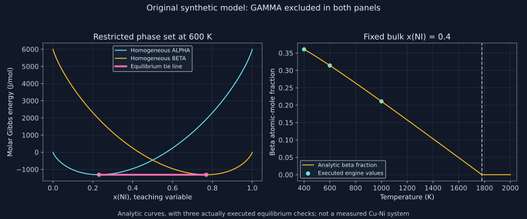

14. Reproducible calculations: phase status, paths and result audits
A software template specifies which thermodynamic problem is solved. Changing the axes, phase set or composition basis can change that problem even when the screen looks similar. We translate the four recorded hands-on sessions into explicit inputs and checks, then execute an open-source equilibrium engine on a small database whose answers can also be derived analytically.
1. Write the calculation before choosing a template
The lecture separates a system-definition stage, an equilibrium-calculation stage and a result-rendering stage. The console counterparts are database selection/retrieval, POLY equilibrium conditions and calculation, and POST display for diagrams. These correspond to distinct scientific tasks: choose the functions permitted to compete, specify constraints, solve, and decide how to present the answer.
A minimally reproducible equilibrium question names the software and database versions, components, permitted phase models, temperature, pressure, total amount, independent overall composition coordinates and their basis. It also records phase suppression, reservoirs or imposed activities, internal constraints and numerical options. Saving a project tree or a macro is useful because cloned calculations can otherwise retain an old exclusion, axis limit or composition unit.
| Recorded task | Independent specification | Output interpretation |
|---|---|---|
| Single point | Fixed T, p, total amount and bulk composition | One equilibrium assemblage and its properties |
| One-axis step | Vary one condition while holding the others fixed | A path through equilibrium states, not a time evolution |
| Binary or general diagram | Two condition coordinates, with all remaining conditions declared | Phase-field map on that selected surface |
| Separate-phase property calculation | Evaluate individually constrained phase branches | Potentially metastable homogeneous properties, not the unconstrained system envelope |
The official educational-package page inspected for this edition describes calculations with at most three components and a collection of smaller demonstration databases. This does not mean every ternary system or every phase model is supplied. The recorded menu layout and prompts belong to its software context; use documentation matching the installed version instead of treating an old click sequence as a permanent interface contract.
2. Input fractions, output fractions and extensive amounts
Lesson 27, 08:06–26:42; lesson 30, 23:13–25:43.
The recorded unary examples ask for iron at 500 K and 1500 K; the output reports BCC and FCC respectively. The binary exercise uses Fe–45 mass percent Cr at 1200 K and reports BCC. These are stated recording outcomes for its selected database, rather than independently reproduced numerical predictions here. Their thermodynamic interpretation is more transferable than the displayed color strips.
A GUI field labeled mass percent can accept 45, whereas the console condition \(W(\mathrm{CR})=0.45\) uses a mass fraction. Neither equals a chromium mole fraction. If \(w_i\) are mass fractions and \(M_i\) compatible molar masses,
\[x_i=\frac{w_i/M_i}{\sum_jw_j/M_j},\qquad \overline M=\frac1{\sum_jw_j/M_j}.\]Derive these from a one-unit-mass specimen: its component amounts are \(w_i/M_i\), and their sum is the total amount of atoms. In particular, \(\sum_iw_iM_i\) is not the mean molar mass under mass-fraction weighting. Using the CIAAW table’s selected central values as fixed illustrative molar masses, Fe 55.845 and Cr 51.9961 g/mol, the laboratory converts 45 mass percent Cr to \(x_{\rm Cr}=0.467730064\) and \(\overline M=54.044753756\) g/mol. Numerical digits show the arithmetic, not a propagated measurement uncertainty or isotopic-composition guarantee.
Phase amounts require a second conversion. If \(f_\phi\) are phase fractions per mole of atoms, then
\[w_\phi=\frac{f_\phi\overline M_\phi}{\sum_\psi f_\psi\overline M_\psi},\qquad v_\phi=\frac{f_\phi\overline V_\phi}{\sum_\psi f_\psi\overline V_\psi}.\]The molar volume formula assumes additive phase volumes with interfacial volumes neglected. A toy mixture with mole fractions (0.75,0.25), phase molar masses (60,90) g/mol and molar volumes \((10^{-5},2\times10^{-5})\) m\(^3\)/mol has beta mass fraction 1/3 and beta volume fraction 0.4. A plot labeled “phase fraction” must identify which one it means. A lever rule using atomic fractions directly gives the matching atomic-mole phase fractions.
In macroscopic bulk equilibrium with no size-dependent terms, multiplying every component amount by a common factor multiplies total G, H, mass and volume by that factor while preserving compositions and phase fractions. This scaling fails if the question changes a surface-to-volume ratio, capillary term or another nonextensive contribution. The recorded choice \(N=1\) is an amount normalization, not proof that such effects are always absent.
3. A homogeneous property and a system property answer different questions
The unary G-versus-temperature exercise first plots the equilibrium system and then separately evaluates competing BCC/FCC branches. For a unary at fixed pressure, the equilibrium molar Gibbs energy is the lower envelope of the permitted pure-phase functions. A crossing changes the stable branch; at an exact first-order coexistence temperature, their amounts can be nonunique unless another constraint such as total enthalpy fixes them. A plotted jump in a selected phase fraction should not be mistaken for a continuous kinetic transformation trajectory.
For a binary, the equilibrium envelope also permits separation into phases at different compositions. Taking the minimum of homogeneous \(g^\phi(T,z)\) values at the bulk composition z generally misses the common-tangent mixture. Even one phase model may have two occupied compositions. A label suffix such as a composition-set index is therefore not necessarily a new crystal structure or an independent assessed phase function.
The distinction is concrete in our teaching TDB. Let \(x=x_{\rm NI}\), define \(q(x)=(1-x)\ln(1-x)+x\ln x\), and use
\[g^\alpha=6000x+RTq(x),\qquad g^\beta=6000(1-x)+RTq(x).\]Both are strictly convex for \(0<x<1\) because \(g''=RT/[x(1-x)]>0\). Symmetry gives contacts \(x_\alpha=a\), \(x_\beta=1-a\), where the common tangent is horizontal. Setting \((g^\alpha)'=6000+RT\ln[a/(1-a)]=0\) yields
\[a=\frac1{1+\exp[6000/(RT)]},\qquad g_{\rm tie}=RT\ln(1-a).\]Strict convexity makes each tangent a global lower bound for its branch. Their equal horizontal tangents therefore certify the two-phase equilibrium for any bulk composition between the contacts. The beta amount is \(f_\beta=(z-a)/(1-2a)\). Outside that interval the appropriate single branch supplies the minimum; do not extend this lever expression to negative fractions.
At 600 K and z=0.4, the actually executed engine gives contacts 0.230992 and 0.769008, beta fraction 0.314132, and equilibrium G of −1310.3017 J/mol. Direct evaluation of homogeneous ALPHA at the same z gives −957.4533 J/mol, higher by 352.8484. The laboratory checks both results against the algebra rather than simply comparing two program screens.
4. An executed engine, a public database and a transparent result parser
Otis and Liu’s 2017 software paper, selected pages 2–5 actually read here, explains the separation of database, symbolic phase model, property calculation and equilibrium solver. Its distinction between calculate() and equilibrium() is central: sampling a property surface is not itself global minimization. This edition executes a later version, not the paper’s archived 0.4.2 release.
The public original teaching TDB defines one substitutional site per atom and two constituents for each phase. Its ALPHA and BETA endmember energies are the constants in the preceding formulas; the ideal mixing contribution is supplied by the phase model. The element lines provide identities and molar masses, while the phase-parameter lines define the synthetic energies. No assessed thermodynamic table was copied into it.
The code passes {T:600, P:100000, N:1, X(NI):0.4} through the corresponding pycalphad variables. The output has arrays for phase names, phase amounts, phase compositions, chemical potentials and system G. The inspected official result-dataset documentation explains the vertex dimension and padding: unused entries can have an empty name and NaN amount, and occupied states are not guaranteed to arrive in a physically meaningful order. The parser below filters unused entries and sorts its records before comparing them.
Most importantly, it tests \(\sum f_\phi=1\), \(\sum f_\phi x_\phi=z\), analytic contact compositions and the energy lower bound. Display precision is deliberately lower than the assertion tolerances. Minor floating-point variations in a nonlinear solver should not be presented as material uncertainty, and a balance check alone does not establish a global minimum.
The executed Python runtime was 3.13; the engine version is pycalphad 0.11.1, with its observed gas constant \(R=8.3145\) J/(mol K). The analytic checks use that same rounded value. Other chapters use the SI-derived value where stated; mixing the constants would create a small reproducibility difference. The dependency versions used here are recorded in requirements.txt. These calculations do not establish universal robustness for other databases, endpoints, critical points or initial guesses.
5. Suppressing a phase changes the feasible problem
The recorded Fe–C exercise first permits graphite. Removing graphite alone leaves diamond competitive in part of the calculated region; removing both yields the intended constrained cementite diagram. This sequence is an effective lesson in phase status. Cropping the composition axis to the cementite range does not remove more stable competing phases from the minimization. Conversely, excluding phases can make a retained phase appear as an equilibrium result under the imposed restriction.
The logical relation is exact. If the restricted feasible set \(\mathcal F_r\) is a subset of the full permitted set \(\mathcal F_f\), then
\[\min_{\mathcal F_f}G\le\min_{\mathcal F_r}G.\]The inequality follows because every restricted candidate remains available in the larger search. It is a useful numerical check whenever a calculation is repeated with additional phases. It does not say the unrestricted state forms quickly. A restricted metastable equilibrium is not a lifetime, nucleation-barrier calculation or proof that the chosen restrictions describe a particular processing experiment.
Our TDB adds \(g^\gamma=-5000+RTq(x)\). Pointwise it lies below ALPHA and BETA, and its strict convexity also rules out gaining energy by splitting GAMMA itself. Its tangent at z lies below GAMMA everywhere and hence below both other branches. This certifies single-phase GAMMA as the full permitted equilibrium. At z=0.4 and 600 K the engine reports fraction 1 and G=−8357.4533 J/mol, well below the restricted ALPHA/BETA result. Calling ALPHA/BETA “stable” must therefore include the phase restriction.
A separate DELTA model has \(g^\delta=RTq(x)+12000x(1-x)\). At 600 K its symmetric binodal satisfies \(RT\ln[a/(1-a)]+12000(1-2a)=0\). The solver returns two occupied states both named DELTA, at 0.169144 and 0.830856. The code verifies an independently bracketed root and conservation. A parser that merges all identical phase names before retaining their compositions would lose the miscibility-gap information.
6. A temperature sweep is a path, not an animation of kinetics
Lesson 28, 20:24–36:13; lesson 29, 18:56–31:34.
The lecture compares a fixed-45-mass-percent-Cr phase-fraction path with the corresponding vertical cut through a binary map. Agreement requires matching the same database, phase set, pressure, composition basis and temperature conditions. A dedicated diagram template may choose a different database by default from a general calculator. Apparent agreement of broad topology is not enough to establish identical quantitative assessments.
The open laboratory holds z=0.4 and changes temperature while excluding GAMMA. Its beta fractions are 0.360586,0.314132,0.210926 at 400,600,1000 K. Analytically, a increases toward1/2 as T increases. With \(a<z<1/2\),
\[\frac{\partial f_\beta}{\partial a}=\frac{2z-1}{(1-2a)^2}<0,\]so the beta fraction decreases until the bulk composition leaves the two-phase interval. This is an equilibrium response to a parameter change. The calculation includes no time, diffusivity, interfacial mobility, heat-transfer rate or transformation barrier. It cannot determine whether a finite cooling schedule realizes each equilibrium state.

A ternary isotherm is likewise a section of a higher-dimensional object. The recorded sigma region looks detached from the binary edge at 1200 K but connects to a binary stability region when lower temperatures are considered. A single isothermal “island” is insufficient evidence of a new intrinsically ternary phase model. Structural identity and model connectivity must be tracked across the complete thermodynamic conditions, rather than inferred from one picture’s outline.
For a fixed-pressure ternary isotherm, two independent composition coordinates span a triangle, not an unrestricted square. In atomic coordinates, \(x_{\rm Fe}=1-x_{\rm Cr}-x_{\rm Ni}\) requires \(x_{\rm Cr}+x_{\rm Ni}\le1\). A standard display uses \(X=x_{\rm Cr}+x_{\rm Ni}/2\), \(Y=\sqrt3\,x_{\rm Ni}/2\). Changing the display from a rectangle to an equilateral triangle changes coordinates, not equilibrium. By contrast, changing mass fractions to mole fractions changes the coordinate map nonlinearly when molar masses differ. Labels must retain that basis, and a tie line must connect the correctly transformed phase compositions.
This explains the recording’s comparison of a dedicated ternary template with a general two-composition-axis diagram. Both can represent the same isothermal thermodynamics when their database, temperature, pressure and phase statuses agree. Merely obtaining a triangle is a rendering check. Recovering the bulk and phase compositions from a single-point result inside a two-phase field or three-phase tie triangle is the substantive conservation check. At fixed T and p in a generic ternary three-phase region, the phase compositions are fixed while the amounts vary with the overall point inside the tie triangle.
7. Constant bulk composition does not constrain each phase to the section
The fixed-10-mass-percent-Ni vertical section has \(w_{\rm Ni}=0.10\), \(0\le w_{\rm Cr}\le0.90\), and \(w_{\rm Fe}=0.90-w_{\rm Cr}\). The fixed-45-mass-percent-Cr section has \(0\le w_{\rm Ni}\le0.55\). These upper bounds enforce a nonnegative dependent component. Specifying an arbitrary 0–100 percent range for the independent axis would include impossible overall compositions.
At an overall composition on such a line, an equilibrium tie line may leave the section. For a manufactured atomic-mole example, let phase compositions be \(\alpha=(0.7,0.2,0.1)\), \(\beta=(0.1,0.5,0.4)\). With beta fraction0.4,
\[\boldsymbol z=0.6\boldsymbol x^\alpha+0.4\boldsymbol x^\beta=(0.46,0.32,0.22).\]The bulk point belongs to the constant-\(x_C=0.22\) section, while neither phase does. The phase C fractions are 0.1 and0.4. Reading two boundary crossings along that section as tie-line endpoints would impose the wrong per-phase constraint. An isopleth is a selected overall-composition path; a strict pseudobinary reduction requires the relevant equilibria to remain within the proposed reduced subsystem. The lecture uses “pseudo binary” more broadly for vertical sections; we retain the operational section definition explicitly.
For an equal Fe:Cr atomic ratio and variable nickel fraction s, the correct path is \(x_{\rm Fe}=x_{\rm Cr}=(1-s)/2\), \(x_{\rm Ni}=s\). Equal mass ratios are a different path unless the two molar masses agree. At s=0.10, the remaining atomic fractions are0.45 each. This oblique path is introduced in lesson 30 as motivation for console work; the recording then completes a simpler single-point console example. It does not complete that oblique-section calculation within this lesson.
8. Console conditions are stateful: inspect them before solving
The recorded command sequence is structurally: start logging; go to DATABASE; select or confirm the database; define Fe and Cr; retrieve data; go to POLY; set conditions; list them; compute; list or export equilibrium. Short abbreviations depend on context and on the command set. Full commands and explicit database names are easier to audit and more durable in saved macros than ambiguous abbreviations or silent defaults.
SET-LOG-FILE
GOTO-MODULE DATABASE
DEFINE-SYSTEM FE CR
GET-DATA
GOTO-MODULE POLY
SET-CONDITION P=100000 T=1500 N=1 W(CR)=0.45
LIST-CONDITIONS
COMPUTE-EQUILIBRIUM
LIST-EQUILIBRIUMThis is an explanatory transcription of the recorded commands, not an executed macro file. Interactive prompts, database selection and file arguments must be supplied for the installed version. The displayed pressure is explicitly1bar; no inconsistent assumption that1bar equals1atm is needed.
The lesson’s early verbal account reverses the sign of its condition-count diagnostic. Its actual demonstration is decisive: after omitting N, the list reports one remaining degree of freedom; setting N=1 changes that diagnostic to zero. The practical check is to inspect the full condition list, identify the missing or redundant independent constraint and confirm a fully specified calculation. A software count that includes an amount normalization is not identical to the intensive Gibbs phase-rule count \(C-P+2\).
In a closed binary, both overall fractions are not independent once their sum is one. In a ternary, two independent composition coordinates suffice. If a chemical potential is imposed by a reservoir instead, the conserved-amount formulation changes and the appropriate potential and conditions must be reconsidered. A numeric zero in a condition counter cannot by itself certify that these chosen conditions express the intended physical ensemble.
9. Execute and audit the complete open laboratory
Use a project-local Python environment and install the pinned numerical requirements; run the following program from the book root with the public teaching TDB present. No private captions, downloaded commercial data or external service are needed for the calculation. The source below is exactly the downloadable program. Runtime packages are third-party dependencies, distinct from the offline HTML reader.
The code repeats the restricted equilibrium at a higher sampling density and compares against the analytic supporting-line certificate. That is stronger evidence for this specific construction than agreement of two sampled grids alone. The DELTA case separately tests multiple composition sets. All parameters are synthetic; none of these checks validates an actual Cu–Ni phase diagram or reconstructs the Fe-based lecture database.
"""Actually executed pycalphad teaching model; NOT assessed Cu-Ni data.
Run from the book root after installing requirements.txt in a project environment.
"""
from pathlib import Path
from math import exp, log, isclose
import numpy as np
import pycalphad
from pycalphad import Database, calculate, equilibrium, variables as v
DB_PATH=Path('data/ch14_synthetic.tdb')
db=Database(str(DB_PATH))
R=float(v.R) # Match this engine's rounded constant for the analytic audit.
assert pycalphad.__version__ == '0.11.1'
print(f'Engine: pycalphad {pycalphad.__version__}; R={R:.4f} J/(mol K)')
# CIAAW tabulated central values used as fixed illustrative molar masses.
Mfe,Mcr=55.845,51.9961
wcr=.45
xcr=(wcr/Mcr)/((1-wcr)/Mfe+wcr/Mcr)
Mbar=1/((1-wcr)/Mfe+wcr/Mcr)
print(f'Fe-45 mass percent Cr: xCr={xcr:.9f}, mean molar mass={Mbar:.9f} g/mol')
fmol=[.75,.25];Mphase=[60.,90.];Vphase=[1e-5,2e-5]
mass_beta=fmol[1]*Mphase[1]/sum(f*m for f,m in zip(fmol,Mphase))
volume_beta=fmol[1]*Vphase[1]/sum(f*vv for f,vv in zip(fmol,Vphase))
print(f'Teaching fractions: beta mole={fmol[1]:.6f}, mass={mass_beta:.6f}, volume={volume_beta:.6f}')
def solve(phases,T=600.0,z=.4,pdens=1000):
return equilibrium(db,['CU','NI'],phases,
{v.T:T,v.P:100000,v.N:1,v.X('NI'):z},calc_opts={'pdens':pdens})
def occupied(eq):
names=eq.Phase.values.reshape(-1)
amounts=eq.NP.values.reshape(-1)
xs=eq.X.sel(component='NI').values.reshape(-1)
return sorted((str(p),float(x),float(f)) for p,x,f in zip(names,xs,amounts)
if p and np.isfinite(f) and f>1e-9)
T,z=600.0,.4
eq=solve(['ALPHA','BETA'],T,z)
rows=occupied(eq)
a=1/(1+exp(6000/(R*T)))
b=1-a
fb=(z-a)/(b-a)
assert [r[0] for r in rows]==['ALPHA','BETA']
assert abs(rows[0][1]-a)<1e-7 and abs(rows[1][1]-b)<1e-7
assert abs(rows[1][2]-fb)<1e-7
assert abs(sum(f for _,_,f in rows)-1)<1e-9
assert abs(sum(x*f for _,x,f in rows)-z)<1e-9
print(f'Restricted 600 K: xAlpha={rows[0][1]:.6f}, xBeta={rows[1][1]:.6f}, fBeta={rows[1][2]:.6f}, GM={float(eq.GM.values.squeeze()):.4f}')
assert abs(float(eq.GM.values.squeeze())-R*T*log(1-a))<1e-6
print('Analytic coexistence and elemental/amount balances: PASS')
# calculate() samples phase states; it does not perform global equilibrium.
calc=calculate(db,['CU','NI'],['ALPHA'],T=T,P=100000,
points=np.array([[.6,.4]]))
g_alpha=float(calc.GM.values.squeeze())
assert abs(g_alpha-(6000*z+R*T*((1-z)*log(1-z)+z*log(z))))<1e-6
print(f'Homogeneous ALPHA at xNi=.4: GM={g_alpha:.4f}; excess above restricted equilibrium={g_alpha-float(eq.GM.values.squeeze()):.4f}')
all_eq=solve(['ALPHA','BETA','GAMMA'])
all_rows=occupied(all_eq)
assert len(all_rows)==1 and all_rows[0][0]=='GAMMA'
assert abs(float(all_eq.GM.values.squeeze())-(-5000+R*T*((1-z)*log(1-z)+z*log(z))))<1e-6
assert float(all_eq.GM.values.squeeze())<=float(eq.GM.values.squeeze())
print(f'GAMMA entered: fraction={all_rows[0][2]:.6f}, GM={float(all_eq.GM.values.squeeze()):.4f}')
for temperature in [400.,600.,1000.]:
sweep=occupied(solve(['ALPHA','BETA'],temperature))
fraction=sum(f for p,_,f in sweep if p=='BETA')
print(f'Fixed bulk sweep T={temperature:.0f} K: fBeta={fraction:.6f}')
# One model, two composition sets: stable DELTA demixing below its critical T.
delta=solve(['DELTA'])
dr=occupied(delta)
assert len(dr)==2 and all(p=='DELTA' for p,_,_ in dr)
assert abs(sum(x*f for _,x,f in dr)-z)<1e-8
# Independent bracketed analytic binodal with the same R.
lo,hi=.01,.3
for _ in range(80):
mid=(lo+hi)/2
value=R*T*log(mid/(1-mid))+12000*(1-2*mid)
if value>0:hi=mid
else:lo=mid
binodal=(lo+hi)/2
assert abs(dr[0][1]-binodal)<1e-6
print(f'DELTA composition sets: xLow={dr[0][1]:.6f}, xHigh={dr[1][1]:.6f}, fHigh={dr[1][2]:.6f}')
# Refinement is a numerical check; the analytic lower bound supplies certification.
refined=solve(['ALPHA','BETA'],pdens=2000)
assert abs(float(refined.GM.values.squeeze())-float(eq.GM.values.squeeze()))<1e-6
print('Sampling-density repeat against analytic certificate: PASS')
# Off-section tie line: constant bulk composition is not a per-phase constraint.
alpha=np.array([.7,.2,.1]);beta=np.array([.1,.5,.4]);f=.4
bulk=(1-f)*alpha+f*beta
assert np.allclose(bulk,[.46,.32,.22])
assert alpha[2]!=bulk[2] and beta[2]!=bulk[2]
print('Ternary off-section balance: bulk=(.46,.32,.22), phase C fractions=.10 and .40')
Engine: pycalphad 0.11.1; R=8.3145 J/(mol K) Fe-45 mass percent Cr: xCr=0.467730064, mean molar mass=54.044753756 g/mol Teaching fractions: beta mole=0.250000, mass=0.333333, volume=0.400000 Restricted 600 K: xAlpha=0.230992, xBeta=0.769008, fBeta=0.314132, GM=-1310.3017 Analytic coexistence and elemental/amount balances: PASS Homogeneous ALPHA at xNi=.4: GM=-957.4533; excess above restricted equilibrium=352.8484 GAMMA entered: fraction=1.000000, GM=-8357.4533 Fixed bulk sweep T=400 K: fBeta=0.360586 Fixed bulk sweep T=600 K: fBeta=0.314132 Fixed bulk sweep T=1000 K: fBeta=0.210926 DELTA composition sets: xLow=0.169144, xHigh=0.830856, fHigh=0.348877 Sampling-density repeat against analytic certificate: PASS Ternary off-section balance: bulk=(.46,.32,.22), phase C fractions=.10 and .40
10. Exercises with complete solutions
1. Translate the composition condition
How should the recorded 45 mass-percent chromium be entered in a fractional console condition? Derive its mole fraction and explain the correct mean-molar-mass average.
Solution
Enter W(CR)=0.45 and take wFe=0.55. For unit total mass, nCr=.45/51.9961 and nFe=.55/55.845. Their ratio gives xCr=0.467730064. Total mass divided by total moles gives 1/(.45/51.9961+.55/55.845)=54.044753756g/mol. A direct mass-fraction average of the molar masses uses the wrong weighting; mole fractions provide the arithmetic average Mbar=sum(xiMi). The table values are treated as fixed central numbers for this calculation.
2. Convert phase fractions
Use the laboratory’s toy phase masses and volumes to show why a25% beta mole fraction need not mean25% mass or volume fraction.
Solution
One mole of atoms contains 0.75 mol alpha and 0.25 mol beta. Their masses are 45 g and 22.5 g, totaling 67.5 g, so beta mass fraction is 22.5/67.5=1/3. Their volumes are 7.5e−6 and 5e−6 m³, giving beta volume fraction 5/12.5=0.4. The mole, mass and volume quantities all conserve their respective totals, but correspond to different normalized measures. Only the mole basis matches the atomic composition lever rule used here.
3. Derive the restricted solver’s answer
Obtain the ALPHA/BETA contacts and phase amount without using an equilibrium program.
Solution
Both branches have positive curvature RT/[x(1−x)]. Setting the ALPHA slope6000+RTln[x/(1−x)] to zero gives a=1/(1+exp[6000/(RT)]). Symmetry gives the BETA contact1−a, also with zero slope and the same height. Convexity proves this horizontal line underlies each branch globally. At600 K with R=8.3145, a≈.23099203 and b≈.76900797. Conservation gives fBeta=(.4−a)/(b−a)≈.31413190; fAlpha≈.68586810. The common energy is RTln(1−a)≈−1310.3017J/mol. Thus a primal assemblage reaches an analytic dual lower bound.
4. Explain a property-calculation discrepancy
Why does homogeneous ALPHA at z=.4 have a higher energy than the restricted equilibrium even though it is an allowed phase?
Solution
Its fixed homogeneous energy is6000(.4)+RT[.6ln.6+.4ln.4]≈−957.4533J/mol. The permitted minimization can instead separate into ALPHA at a and BETA at b while preserving bulk z. Their mixture costs−1310.3017, a reduction352.8484J/mol. A homogeneous property calculation constrains every atom to one composition state; allowing separation enlarges the feasible set. Evaluating a phase at the bulk composition is not equivalent to evaluating its equilibrium composition in a multiphase assemblage.
5. Prove the effect of entering GAMMA
Show analytically that GAMMA is the full equilibrium of the three-phase teaching model at every interior bulk composition.
Solution
At each x, gAlpha−gGamma=5000+6000x>0 and gBeta−gGamma=11000−6000x>0. GAMMA is strictly convex, so its tangent at any given z underlies GAMMA everywhere. It therefore also underlies both other branches everywhere. The single homogeneous GAMMA state at z attains this bound. Its equilibrium amount is1, and at600 K,z=.4 its energy is−5000+RTq(.4)≈−8357.4533J/mol. Removing GAMMA yields a higher restricted optimum but supplies no kinetic persistence time for that state.
6. Audit the DELTA output
The result contains two positive entries both named DELTA. Why is this meaningful, and what independent check can distinguish it from a duplicate-array error?
Solution
The model permits separation into different compositions of the same phase function. At600 K, the symmetric nontrivial root of RTln[a/(1−a)]+12000(1−2a)=0 gives a≈.16914401 and1−a≈.83085599. The high-composition fraction is(.4−a)/(1−2a)≈.34887685, and the low fraction≈.65112315. The code brackets that root independently and checks reconstructed bulk composition. A parser should retain each occupied composition set rather than identifying a state solely by phase-name text. This test does not classify crystal structures beyond the stipulated model.
7. Distinguish a vertical section from a binary tie line
For the two manufactured ternary phases, recover the bulk composition at beta fraction .4. Can a lever rule along xC=.22 use the phase endpoints as points on that section?
Solution
The balance is .6(.7,.2,.1)+.4(.1,.5,.4)=(.46,.32,.22). Neither endpoint has C fraction.22, so neither lies on the selected constant-C section. That section intersects the tie line at the overall point only. Treating boundaries of an isopleth as endpoints of this tie line would discard partitioning of C. One must use the full phase compositions and matched phase-amount basis. If the section used mass fractions instead, the balances and amount fractions would require the corresponding conversion.
8. Locate the end of the restricted two-phase thermal path
For fixed z=.4, find the temperature at which the ALPHA contact reaches the bulk composition, and state what happens to the lever formula above it.
Solution
Set a=z in the analytic expression: exp[6000/(RT)]=(1−z)/z=1.5, so \(T_s=6000/[R\ln(1.5)]\), approximately1780 K with the stated rounded R. Below this temperature the bulk lies between the contacts and fBeta is positive. At Ts it reaches zero. Above Ts the algebraic lever expression becomes negative and must be replaced by the single-phase ALPHA minimum at bulk z. This threshold is an equilibrium boundary of the specified restricted model, not an onset time or a calibrated solution-treatment temperature for an actual alloy.
9. Repair a condition list and a saved calculation
A binary console list contains p,T,W(CR), but no N, and reports one free condition. What should be checked before comparing it with a saved GUI result? What if a cloned tree still suppresses a phase?
Solution
Specify the intended total amount, for example N=1, and relist conditions to confirm the missing normalization is supplied. Check that W(CR)=.45 represents45 mass percent, not45fraction or.45molefraction; confirm the actual database/version, phase set, p and T. Adding W(FE)=.55 does not supply an independent binary composition condition because normalization already fixes it. A retained phase exclusion changes the permitted minimization; it must be restored for a full-equilibrium comparison or explicitly stated as a restricted calculation. A zero condition counter and a plausible plot do not replace these checks.